地政学
ジブチ市はバブ・エル・マンデブ海峡に近く、紅海、インド洋、スエズ航路、エチオピア内陸を結びます。小国の首都ですが、港と軍事基地が世界の海運、対テロ、地域外交を都市の日常へ引き寄せます。緊張も近いです。
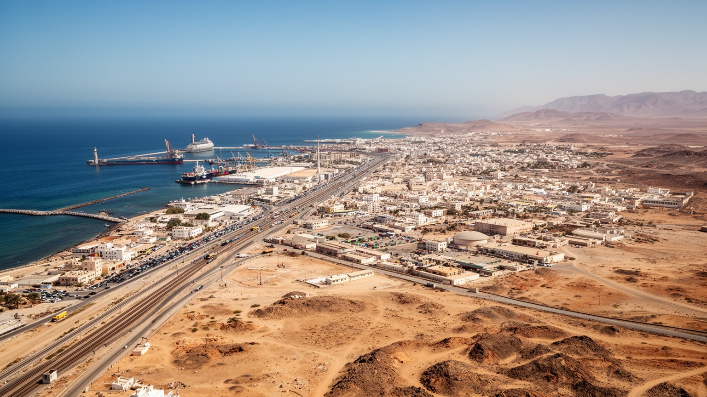
🇩🇯 ジブチ共和国 / 首都 / World City Atlas
紅海、アデン湾、アフリカ内陸を結ぶ小さな首都です。港湾、鉄道、軍事基地、ソマリとアファールの社会、イスラムの暦、難民と移民、酷暑、水不足、塩湖への旅が都市の輪郭を作ります。
都市の骨格
ジブチ市は、国土の大半の人口と機能を集める首都です。海峡に近い港、エチオピアへ伸びる鉄道、多国籍の軍事拠点、旧市街とバルバラの住宅地が、暑く乾いた海辺で一つの都市を作っています。
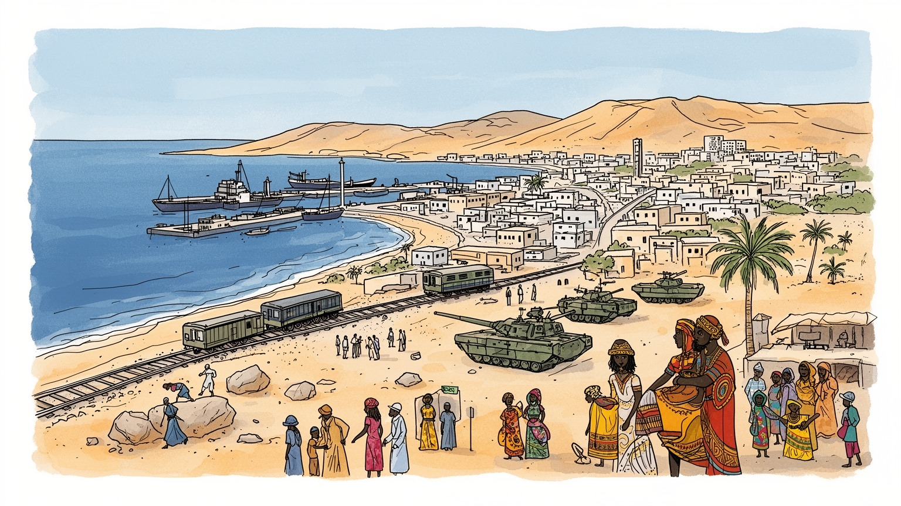
ジブチ市はバブ・エル・マンデブ海峡に近く、紅海、インド洋、スエズ航路、エチオピア内陸を結びます。小国の首都ですが、港と軍事基地が世界の海運、対テロ、地域外交を都市の日常へ引き寄せます。緊張も近いです。
港湾、自由貿易区、鉄道、通関、倉庫、軍事関連サービス、行政、建設、小売が雇用を作ります。物流収入は大きい一方、若者の仕事、技能、住宅費、物価、非公式労働が生活を揺らします。港の繁忙が家計にも届きます。
ソマリ、アファール、アラブ、フランス語行政、イスラムの礼拝、港町の商人文化が重なります。金曜礼拝、ラマダン、結婚、親族、カートの時間、市場の会話が、暑い首都の社会的な暦を作ります。海辺の街の声です。
住民は酷暑、水、家賃、輸入品価格、通勤、学校、医療をやりくりします。旅行者は港の景観、旧市街、市場、モスク、ムシャ島、アッサル湖、アッベ湖への道から、都市と砂漠の近さを感じます。日常は海風と熱です。
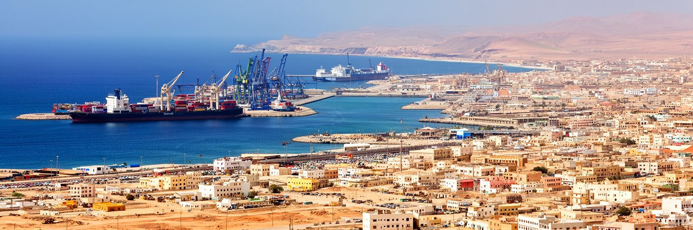
ジブチ市の重みは、都市の人口や国土の広さだけでは測れません。紅海の南端、バブ・エル・マンデブ海峡に近い位置は、スエズ運河からインド洋へ向かう船舶の動き、アラビア半島との距離、東アフリカ内陸への入口を一つに結びます。港の岸壁、燃料補給、コンテナ、通関、海上保安は、世界経済の遠い流れを首都の日常へ引き寄せます。ジブチ共和国は小国ですが、エチオピアの主要な海への窓を担うため、内陸の巨大市場と港湾都市の関係がきわめて密です。海峡の安全が揺れれば、保険料、航路、燃料、軍事活動、食料輸入まで影響します。市内の道路を走るトラック、港で働く労働者、ホテルに泊まる船員や軍関係者は、海峡都市の現実を見せています。一方で、港が国際的であるほど、普通の住民には物価、地価、交通、治安管理として負担も現れます。ジブチ市を読むには、地図上の小さな点を拡大し、そこを通る船、隣国の貨物、湾岸の資本、地域紛争を重ねる必要があります。海と砂漠の間にあるこの首都は、世界の狭い通路がどれほど生活を変えるかを教えてくれます。さらに海峡都市の政治は、港湾料金や基地協定だけでなく、沿岸の漁業、燃料価格、船員の休息、海難救助にも表れます。国際航路の安全が語られる時、そこには市民が買う小麦や米の値段も含まれています。港外の漁船や家族経営の店も、その影響を受けます。
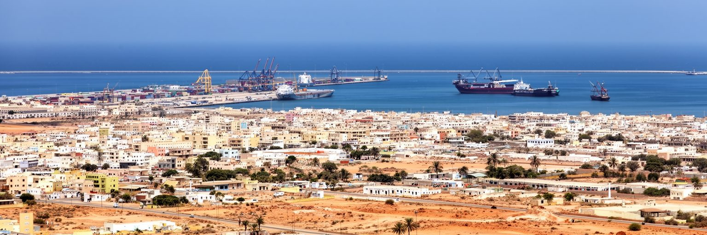
ジブチ市の経済の中心には港湾物流があります。コンテナ港、多目的港、燃料施設、自由貿易区、倉庫、通関会社、保険、銀行、運送業が、都市の雇用と国家収入を支えています。特にエチオピア向けの輸出入貨物は大きく、内陸国の消費、建設、工業、農産物取引がジブチの港を通じて海へ出入りします。港は巨大な機械の場所に見えますが、その背後にはクレーン操作、書類確認、警備、清掃、整備、食堂、タクシー、小売、携帯通信まで多くの仕事があります。物流が速くなれば企業は利益を得ますが、港湾都市の住民にはトラック交通、道路の傷み、排気、土地価格、港周辺の立ち入り制限も残ります。自由貿易区や新港開発は、投資を呼び込み、地域のハブを目指す戦略です。しかし、利益が技能ある若者の雇用、地元企業の育成、公共サービスの改善へどれだけ広がるかが問われます。港湾は外貨を稼ぐ装置であると同時に、国の食料、燃料、生活用品を受け入れる命綱です。ジブチ市では、世界の航路図と家庭の買い物かごが、同じ岸壁の効率に結びついています。港が止まれば、企業の納期だけでなく、パン、燃料、薬、建材の供給も遅れます。そのため港湾政策は経済成長の話であると同時に、普通の家計を守る生活政策でもあります。港で得た収入を教育や技能訓練へ回せるかも重要です。地域にも。
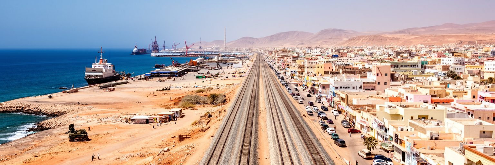
ジブチ市は港だけでなく、内陸へ伸びる回廊の起点として重要です。アディスアベバ方面へ向かう鉄道と道路は、エチオピアの人口、工業、農産物、輸入需要を海へつなげます。旧来の鉄道が植民地期から地域を結んできた記憶を持つ一方、近年の電化鉄道と道路整備は、港湾機能をより広い経済圏へ接続しました。貨物列車やトラックは、市内の岸壁から乾いた内陸へ進み、穀物、燃料、機械、肥料、消費財を運びます。ジブチ市にとって、この回廊は収入源であり、同時に隣国の政策、通関、治安、為替、港湾料金に影響される依存関係でもあります。エチオピア側の成長が続けば港は忙しくなりますが、他の港湾ルートが整備されれば競争も強まります。物流回廊を支える仕事は、運転手、整備士、倉庫労働者、税関職員、鉄道技術者、食堂や宿泊業まで広がります。けれども回廊が市民生活を横切る時、交通事故、渋滞、粉じん、沿道開発、土地利用の問題も起きます。ジブチ市を内陸回廊から見ると、首都は海辺の終点ではなく、アフリカの内陸経済が外へ呼吸する接続点になります。鉄道駅や乾いた沿道の倉庫では、国境を越える経済が日々の勤務表に変わります。車両整備や貨物検査の遅れは、港の混雑だけでなく内陸の市場価格にも響きます。回廊の信頼性は、都市の評判そのものでもあります。日々問われます。
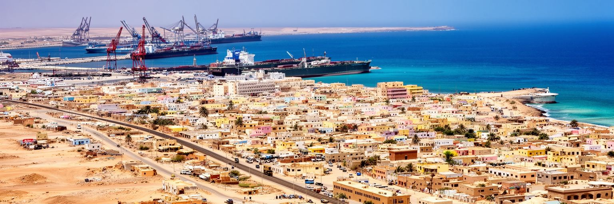
ジブチ市の国際的な特徴は、多国籍の軍事基地が近い距離に集まることです。フランス、アメリカ、中国、日本などが拠点を置き、紅海、アデン湾、ソマリア沖、イエメン情勢、海賊対策、対テロ、避難作戦、海上交通の安全に関わっています。小さな首都に複数の大国の拠点が並ぶ状況は、地政学の教科書のように見えますが、市民にとっては雇用、賃貸、警備、交通、騒音、物価、外交的な緊張として感じられます。基地関連の支出はホテル、建設、飲食、物流、通訳、清掃、警備に仕事を生みます。一方で、外国軍の存在は主権、土地利用、事故、情報管理、地域紛争への巻き込まれをめぐる議論も呼びます。ジブチ政府にとって基地は重要な収入と安全保障の資産ですが、特定の大国に過度に依存しない均衡も必要です。港湾と基地が重なるため、都市の海辺は商業と軍事の両方の意味を持ちます。ジブチ市を歩くと、国際政治は遠い会議室だけでなく、制服の人影、警備された道路、空港の動き、宿泊施設の需要として現れます。小国の首都は、海峡の安全をめぐる世界の関心を日々受け止めています。基地の存在は医療対応や災害時の退避にも関係しますが、住民が立ち入れない空間も増やします。安全保障の利益と都市の開放性をどう両立するかが、首都の繊細な課題です。基地収入が公共サービスへ見える形で戻るかも問われます。
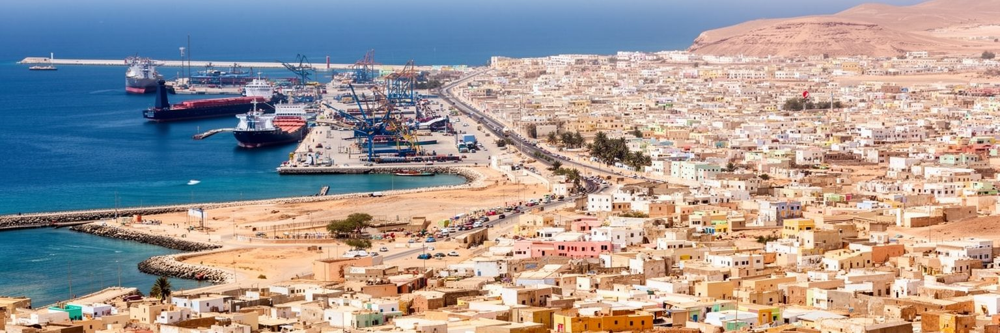
ジブチ市の旧市街には、フランス領ソマリ海岸以来の港町の記憶が残ります。碁盤目状の街路、古い行政建築、モスク、商店、ホテル、市場、海へ向かう道は、紅海とインド洋を結ぶ交易の歴史を語ります。ソマリ、アファール、アラブ、イエメン系、フランス語圏の影響が重なり、言語、食、服装、商習慣、宗教行事が混ざります。港町の文化は開放的に見えますが、移動と交易はいつも平等だったわけではありません。植民地支配、労働の分断、港湾労働者の貧しさ、民族間の政治、移民管理も都市の歴史に含まれます。今日の旧市街では、香辛料、布、携帯電話、両替、小さな食堂、カートの店、礼拝に向かう人びとが、暑い午後の街を動かします。観光客にとっては異国的な風景でも、住民にとっては家賃、仕事、電気、水、家族の用事をこなす実用の場所です。再開発や港湾拡張が進むほど、古い街区の建物をどう修理し、商人や低所得世帯の居場所をどう守るかが課題になります。ジブチ市の旧市街は、派手な遺産地区ではありませんが、港が都市を作り、都市が港を支えてきた時間を読む入口です。路地の小さな店は、輸入品と近所の信用を結び、暑さを避ける軒先は会話の場にもなります。保存すべきものは建物の外観だけでなく、歩いて買える距離と商いの密度でもあります。旧市街の生活感が残るほど、港町の記憶も生きます。
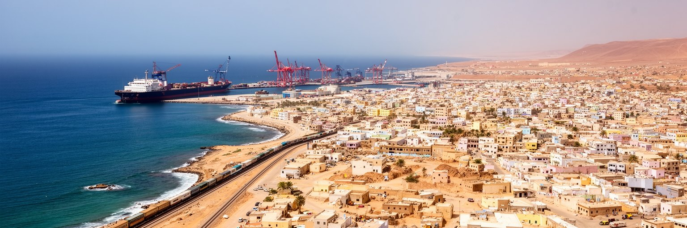
ジブチ市の日常はイスラムの時間と深く結びついています。モスクからの呼びかけ、金曜礼拝、ラマダン、断食明けの食事、結婚、葬送、慈善は、都市の社会関係を整えます。商店の開け方、食堂の混み方、学校や職場の予定、家族訪問は宗教暦に影響され、暑い季節には昼の動き方も変わります。宗教は観光名所の建物だけでなく、近所の助け合い、貧しい世帯への支援、親族の義務、礼儀、食の規範として働きます。ジブチ市にはソマリとアファールを中心に、イエメン由来の商人文化や周辺国から来た人びとも暮らし、イスラムは多様な背景をつなぐ共通の基盤になります。一方で、都市化が進むと、若者の仕事、消費文化、海外メディア、教育、女性の就業、宗教的な期待の間で調整も必要です。礼拝の場は精神的な支えであると同時に、情報交換と社会的な信用の場でもあります。市場での取引、近所の評判、家族の相談は宗教的な倫理と切り離せません。ジブチ市を宗教から読む時、信仰を固定した伝統としてではなく、港町の移動と酷暑の生活を支える柔らかな時間割として見ることが大切です。断食月の夕方には、通りの混雑、食材の仕入れ、家族の訪問が一斉に変わります。祈りの時間を中心に街を見れば、経済活動と共同体が別々ではないことが分かります。宗教の暦は、都市の忙しさを人間の速度へ戻します。
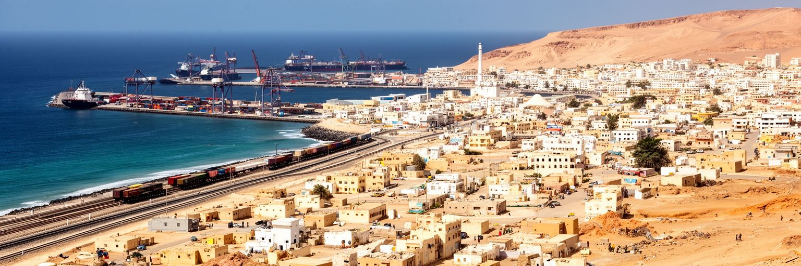
ジブチ市は、紅海を渡る移動とアフリカの角の不安定さを身近に受け止める都市です。エチオピア、ソマリア、エリトリア、イエメンに近く、労働移動、難民、庇護、家族の再会、湾岸への渡航、送金が都市の生活に入り込みます。港や道路、バスターミナル、支援機関、安い宿、通信店は、移動する人びとの経路になります。移民は建設、家事、露店、港湾周辺の小さな仕事を担うことがありますが、身分、言語、住居、医療、教育、警察対応の不安にさらされやすいです。イエメン紛争やソマリア情勢は、海を隔てた遠いニュースではなく、ジブチ市の支援施設、家族の会話、港の警備に影響します。移動は希望を含みますが、危険な海路、搾取、失業、差別、家族分離も伴います。首都の住民自身も、教育、仕事、医療、巡礼、親族訪問のために国外とのつながりを持ちます。ジブチ市を移民から読むには、人の流れを単なる統計や治安問題として見ないことが必要です。誰が海を渡り、誰が残り、誰が送金を待ち、誰が市場で小さな仕事を探すのか。そこに、海峡都市の人間的な奥行きがあります。移動する人が増えるほど、学校、診療所、住宅、支援窓口には負荷がかかります。それでも人びとの移動は、都市に新しい言葉、料理、労働、祈りを運び込みます。受け入れの制度が整うほど、都市の緊張は和らぎます。
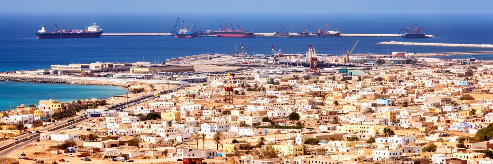
ジブチ市の暮らしを考える時、住宅と水は避けられません。国の人口と機能が首都に集中し、バルバラをはじめとする住宅地は急速に広がってきました。仕事を求める人、地方から来た家族、周辺国からの移動者、港湾や基地関連の労働者が集まる一方、手ごろで安全な住まいは十分ではありません。酷暑の沿岸都市では、建物の断熱、通風、日陰、水道、電力、排水、道路舗装が生活の質を大きく左右します。水が高価または不安定であれば、家庭は貯水、購入、節約、洗濯や調理の順番を考えます。電力料金や停電は、扇風機、冷蔵、学習、商店の営業にも影響します。住宅地が広がるほど、学校、診療所、公共交通、廃棄物収集を追いつかせることが難しくなります。海に近い中心部と、内陸側へ広がる住宅地では、通勤時間やサービスの差も生まれます。ジブチ市は港湾投資で国際的な資本を集めますが、その利益が住民の水、涼しさ、家賃、衛生へ届くかが都市の公平性を決めます。暑い街で暮らす尊厳は、大きな港のクレーンよりも、日陰のある道と安定した蛇口に表れるのです。住まいの不足は、親族同居や長い通勤を増やし、若者の独立も遅らせます。水と住宅を改善できるかどうかは、港湾国家の成功が住民生活に届いているかを測る指標です。生活基盤の遅れは、都市の成長を内側から弱めます。家計にも響きます。
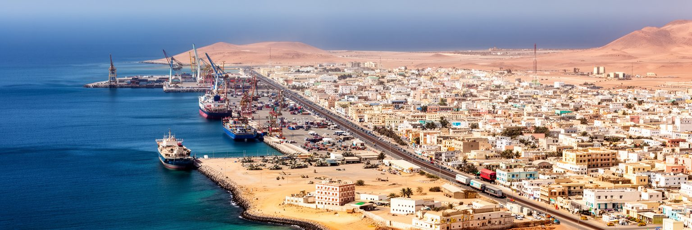
ジブチ市の気候は、都市の働き方と休み方を根本から決めます。紅海沿岸の低地にあり、夏は非常に暑く、乾燥した空気と湿った海風が交互に生活を包みます。日中の移動は体力を奪い、建設、港湾、警備、清掃、露店、配送の労働者には熱中症の危険があります。気候は観光の季節だけでなく、学校の時間、礼拝後の動き、屋外市場、公共交通の待ち時間、家庭の電気代まで左右します。暑い都市では、日陰、街路樹、屋根材、通風、冷房、給水所、休憩できる公共空間が単なる快適設備ではなく、健康を守るインフラになります。ところが水と電力に制約がある地域では、冷房に頼る解決は誰にでも使えるわけではありません。気候変動で暑熱や海面上昇、高潮、降雨の極端化が進めば、港湾施設、低地の住宅、排水、道路にも影響します。ジブチ市の都市計画は、海峡の物流だけでなく、熱をどう逃がし、水をどう確保し、弱い世帯をどう守るかに向き合う必要があります。強い日差しの下で歩く人びとを見ると、気候適応が将来の政策ではなく、すでに毎日の労働と家計の問題であることが分かります。日陰のないバス待ちや市場の作業は、所得の低い人ほど厳しくなります。涼しい室内を持つ人と持たない人の差は、健康、学習、商売の差として広がります。暑さ対策は福祉であり、労働政策でもあります。命を守ります。
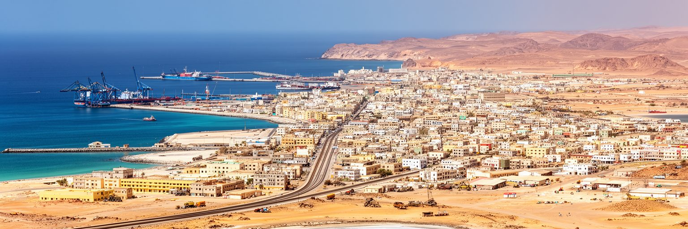
ジブチ市の観光は、都市だけで完結するものではありません。旅行者は港の景観、旧市街、市場、モスク、海辺のレストランを見た後、ムシャ島の海、アッサル湖の塩と低地、アッベ湖の石灰岩の塔、砂漠の道、タジュラ湾の風景へ向かいます。首都はこうした自然景観への玄関であり、ガイド、車両、宿泊、許可、食料、燃料、通信を整える場所です。観光は国のイメージを広げ、地元の雇用を作る可能性がありますが、季節、暑さ、交通費、治安情報、宿泊の質、環境保全に左右されます。塩湖や砂漠は強い視覚的魅力を持つ一方、壊れやすい環境でもあります。無秩序な車の走行、廃棄物、水利用、地域社会への還元不足は、観光の価値を損ないます。ジブチ市内でも、観光客向けの価格と住民の生活費の差、港湾や基地の警備による撮影制限、旧市街の保存が課題になります。観光を読むには、絶景だけでなく、誰が案内し、誰が燃料を運び、誰が水を使い、誰が収入を得るかを見る必要があります。ジブチ市は、海、砂漠、火山性の地形、海峡の歴史を結ぶ小さな拠点として、旅の始まりと現実の生活を同時に見せます。短い滞在でも、朝の市場と夕方の海辺を歩けば、観光の華やかさと生活費の重さが近いことに気づきます。旅の質は、景色だけでなく、地域に残る収入と環境への配慮で決まります。首都の案内力が、遠い景観の価値を支えます。
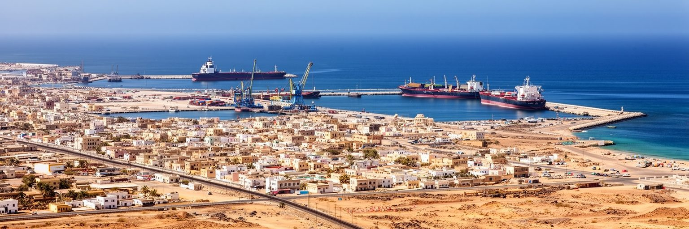
ジブチ市を読む面白さは、小さな都市の中に世界の通路が凝縮されていることです。港はエチオピア内陸の経済を海へ開き、鉄道と道路は乾いた大地を越えて貨物を運び、軍事基地は紅海とインド洋の安全保障を引き寄せます。旧市街ではイスラムの礼拝、商人文化、フランス語行政、ソマリとアファールの社会が重なり、住宅地では水、電力、家賃、暑さ、仕事探しが毎日の現実になります。移民や難民の流れは、海峡都市が人の希望と危険を同時に抱えることを示します。観光客は塩湖や砂漠の風景に向かいますが、その出発点である首都には、港湾投資と生活基盤の差、国際的な基地収入と若者の雇用、酷暑に耐える住宅の問題が見えます。ジブチ市は巨大な金融都市でも、古代遺跡に満ちた観光都市でもありません。しかし、スエズ航路、アフリカの角、アラビア半島、内陸国エチオピア、湾岸資本、大国の安全保障が交差する場所として、現代世界の結び目をよく見せます。この都市を理解するには、港のクレーン、モスクの呼びかけ、バルバラの住宅、海峡を行く船、塩湖への道を同じ地図に置くことが必要です。そこに、小国の首都が持つ大きな意味があります。目立つのは港と基地ですが、都市の評価は住民が暑さの中で安全に移動し、学び、働き、水を得られるかで決まります。世界の通路であることと、暮らせる街であることを結べるかが、ジブチ市の次の課題です。